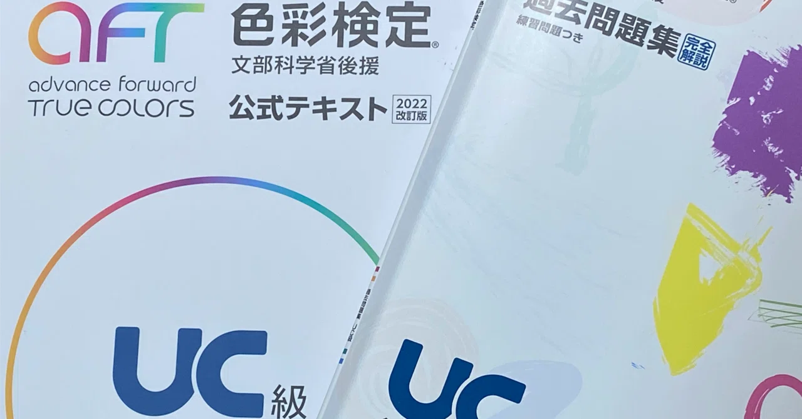

エンジニアリング
Figmaプラグイン
-
 CSS/SCSS Variables Colorizer
CSS/SCSS Variables Colorizer
変数設定の効率化をするために作成しました。使い方をまとめたブログはこちら。GitHubはこちらです。
-
 Square Wrap
Square Wrap
デザインデータがPhotoshopで作られる現チーム。Photoshopではアイコンサイズを揃えるのが難しいということで、簡単にサイズを揃えられるプラグインを開発しました。GitHubはこちらです。
過去に書いた記事
デザイン
Webサイト
-
無頼花
知人の依頼により作成。使用ツールはSTUDIOです。今後更新のチャンスがあればアクセシビリティを改善したいところが結構あります…。
-
LT告知用バナー（リメイク）
社内ライトニングトーク用バナーとして提案したデザインのリメイクです。結果的に採用されませんでした。ただ、Figmaが詳しくない人でも操作できるようにプロパティ機能を活用して、ほぼパネルの値を変更すれば運用できるよう工夫しました。
-
営業時の資料
自営業の父から依頼されてチラシのようなものを作っていたことがあります。自分でデザインを作るのは初めてに近かったですが、この時にデザインツールの基本的な使い方が身についた気がします。
アクセシビリティ
勉強会発表資料
社内で行った勉強会の資料をリメイクしたものです。
資料をダウンロードするとPDFファイルとマークダウンファイルが含まれたzipファイルがダウンロードされます。PDFファイルはスクリーンリーダーでの読み上げに対応できていない可能性があるため、スクリーンリーダーを使用する場合はマークダウンファイルをご使用ください。
-
 アクセシビリティ超入門
アクセシビリティ超入門
情報が伝わらないスライドを用意して、どうやったら情報が伝わるスライドになるかを伝えながらアクセシビリティを学べる内容にしました。
-
 アクセシビリティの高いUIを作ろう
アクセシビリティの高いUIを作ろう
見た目は同じ、でも実装方法が違う3種類のアコーディオンメニューを例に、アクセシビリティが高いUIについて説明しました。
-
 アクセシブルな名前
アクセシブルな名前
著者由来とコンテンツ由来の違いやroleによってルールが変わることなどに触れながらアクセシブルな名前を学べる内容にしました。
過去に書いた記事
-

色彩検定UC級を受験してみた
エンジニア視点だけでなく、デザイナー視点でもアクセシビリティをやっていきたいと思い受験しました。受験を通して学習した内容をまとめています。